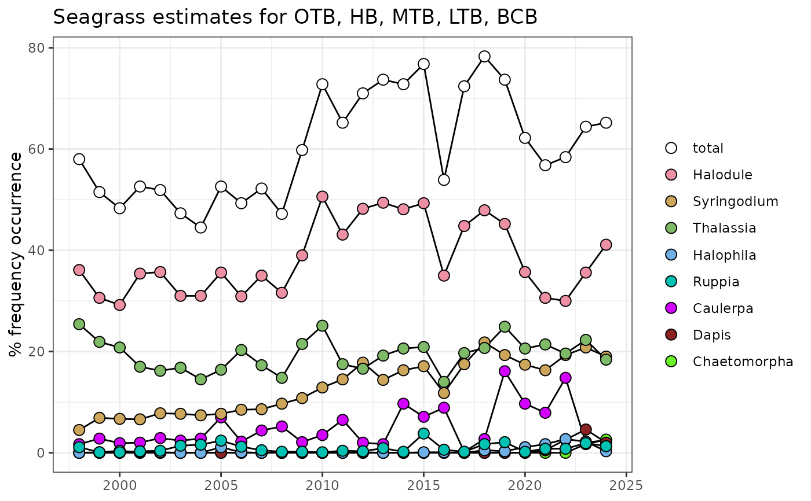

R/show_transectavespp.R
show_transectavespp.RdShow annual averages of seagrass frequency occurrence by bay segments, year, and species
show_transectavespp( transectocc, bay_segment = c("OTB", "HB", "MTB", "LTB", "BCB"), yrrng = c(1998, 2019), species = c("Halodule", "Syringodium", "Thalassia", "Halophila", "Ruppia", "Caulerpa"), total = TRUE, alph = 1, family = NA, plotly = FALSE, asreact = FALSE )
| transectocc | data frame returned by |
|---|---|
| bay_segment | chr string for the bay segment, one to many of "OTB", "HB", "MTB", "LTB", "BCB" |
| yrrng | numeric indicating year ranges to evaluate |
| species | chr string of species to summarize, one to many of "Halodule", "Syringodium", "Thalassia", "Ruppia", "Halophila", "Caulerpa" |
| total | logical indicating if total frequency occurrence for all species is also returned, only applies if |
| alph | numeric indicating alpha value for score category colors |
| family | optional chr string indicating font family for text labels |
| plotly | logical if matrix is created using plotly |
| asreact | logical if a reactable table is returned instead of a plot |
If asreact = F, a ggplot or plotly (if plotly = T) object is returned showing trends over time by species for selected bay segments. If asreact = T, a reactable table showing results by year, segment, and species is returned.
Results are based on averages across species by date and transect in each bay segment
The plot is a representation of figure 2 in Johansson, R. (2016) Seagrass Transect Monitoring in Tampa Bay: A Summary of Findings from 1997 through 2015, Technical report #08-16, Tampa Bay Estuary Program, St. Petersburg, Florida.
The table is a representation of table 2, p. 163 in Yarbro, L. A., and P. R. Carlson, Jr., eds. 2016. Seagrass Integrated Mapping and Monitoring Program: Mapping and Monitoring Report No. 2. Fish and Wildlife Research Institute Technical Report TR-17 version 2. vi + 281 p.
Other visualize:
show_boxplot(),
show_compplot(),
show_matrixplotly(),
show_matrix(),
show_reactable(),
show_segmatrix(),
show_segplotly(),
show_sitemap(),
show_tbbimatrix(),
show_tbnimatrix(),
show_tbniscrall(),
show_tbniscrplotly(),
show_tbniscr(),
show_tdlcrk(),
show_thrplot(),
show_transectmatrix(),
show_transectsum(),
show_transect(),
show_wqmatrix()
if (FALSE) { transect <- read_transect() } transectocc <- anlz_transectocc(transect) show_transectavespp(transectocc)#> Warning: st_crs<- : replacing crs does not reproject data; use st_transform for that